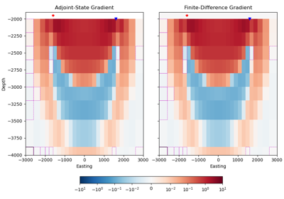

Comparisons#
Comparisons with other codes.
1. empymod: 1D VTI resistivity
1. empymod: 1D VTI resistivity
2. MARE2DEM: 2D with tri-axial anisotropy
2. MARE2DEM: 2D with tri-axial anisotropy
3. SimPEG: 3D with tri-axial anisotropy
3. SimPEG: 3D with tri-axial anisotropy

4. Adjoint-state vs. FD gradient
4. Adjoint-state vs. FD gradient
5. empymod: 1D VTI Laplace-domain
5. empymod: 1D VTI Laplace-domain
6. Magnetic field due to an el. source
6. Magnetic field due to an el. source
7. Magnetic source using an electric loop
7. Magnetic source using an electric loop

9. Magnetic permeability